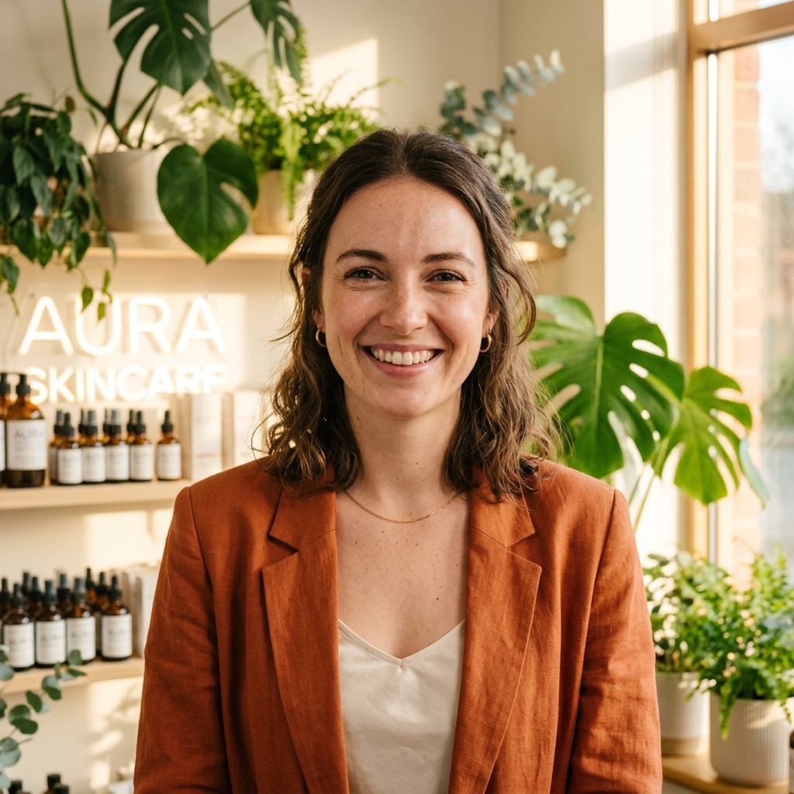

Our Story
Engineering the Future of Sustainable Supply Chains
We design, manufacture, and distribute certified B-Corp circular packaging solutions at enterprise scale. Replacing plastic with performance.

We design, manufacture, and distribute certified B-Corp circular packaging solutions at enterprise scale. Replacing plastic with performance.
Our core principles guide how we develop materials, audit suppliers, and support businesses worldwide.
We are on a relentless mission to engineer and deliver carbon-neutral bio-materials that protect products and regenerate the planet, proving that sustainability and high performance can co-exist at scale. By partnering with regenerative farms and utilizing organic waste, we eliminate single-use plastics from global commerce, enabling brands to seamlessly go green.
We envision a zero-waste packaging ecosystem where circular material flows divert millions of tons of plastic from landfills and standard logistics run on clean, renewable energy. By 2030, our goal is to eliminate 100 million tons of plastic from retail supply chains, making sustainable packaging the standard for businesses of all sizes.
Since our founding, we have pushed the boundaries of supply chain innovation to deliver scalable circularity.
VerdantPack was established in Austin, Texas by three supply chain engineers committed to developing zero-waste bulk shipping alternatives.
Launched our signature plant-starch compostable shipping mailers, passing rigorous ASTM D6400 industrial standards.
Opened regional warehousing nodes in California and New Jersey, cutting average transit distances by 32% for domestic shipping.
Certified Carbon Neutral by ClimatePartner after fully auditing and offsetting Scope 1, 2, and 3 footprint operations.
Over 18,000 active e-commerce partners globally, replacing over 100 million single-use plastic boxes and envelopes.
A team of environmental scientists, supply chain architects, and developers building scalable sustainability.
Former B2B logistics lead at Unilever. Jamie focuses on standardizing bio-packaging across commercial supply chains.
Materials science PhD from MIT. Priya engineered our moisture-resistant crop-starch polymers that compost completely.

Ex-Product Director at Flexport. Anika leads the dashboard and API systems that automate ordering and Scope 3 audits.
Ex-auditor for forestry standards. Marcus validates that 100% of our raw starches are regeneratively grown.
Real feedback from logistics, retail, and environmental directors scaling circularity.
"VerdantPack didn't just give us shipping bags; they gave us a complete, B-Corp certified logistics solution that reduced transit waste. Our users absolutely love the unboxing experience."
"Implementing their automated reorder API has completely streamlined our shipping replenishment cycles. Next-day delivery from regional nodes means zero downtime."
"The Live Scope 3 emission audits on the dashboard represent the highest level of accountability in packaging. It has made our board auditing incredibly simple."
Join 18,000+ brands using circular packaging materials. Set up your enterprise replenishment portals and track offsets dynamically.